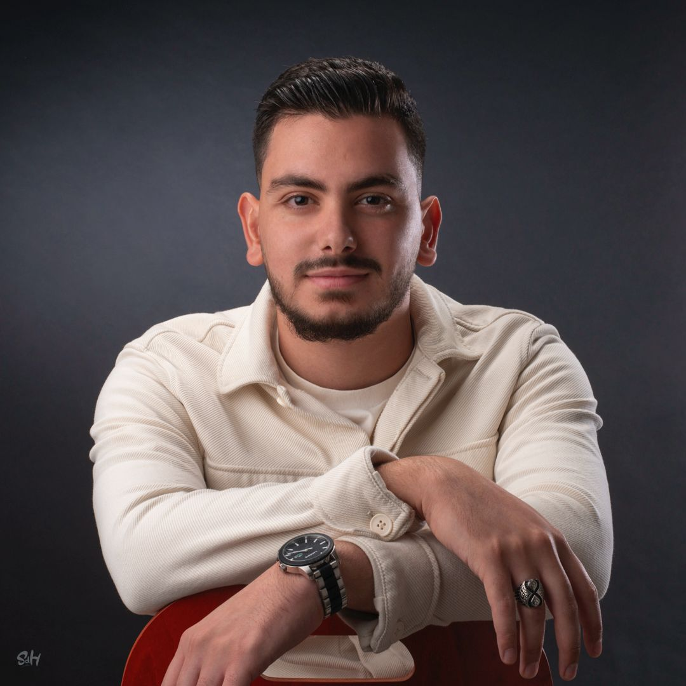
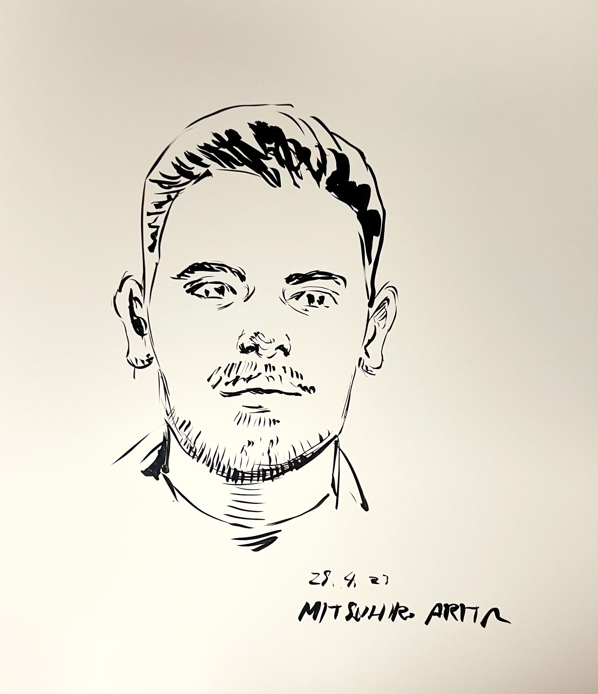

Ammar Kheder
Doctoral Researcher in Computational Engineering · LUT University


I develop neural network architectures that explicitly encode atmospheric physics — terrain–atmosphere interactions, advective transport — to push spatial resolution and forecast accuracy for air quality and Earth system prediction. Based at LUT University within the Atmospheric Modelling Centre (AMC–Lahti), supervised by Prof. Michael Boy and Assoc. Prof. Zhi–Song Liu.
I have hands-on experience running large-scale distributed training on the LUMI supercomputer, scaling experiments up to 1,024 AMD MI250X GPUs for training vision transformer models on high-resolution atmospheric reanalysis data.
MSc in Engineering (Big Data & AI) from EiCnam Paris, with a one-year apprenticeship at INRIA Bordeaux within the Mnemosyne team, co–led by Frédéric Alexandre and Nicolas Rougier.
Keywords. Air quality, atmospheric modelling, physics-informed neural networks, vision transformers, climate, spatial downscaling, high-performance computing, large-scale distributed training.
News
- Apr 2026 New TopoFlow published in npj Climate and Atmospheric Science — Nature Portfolio.
- Apr 2026 Talk accepted at IAC 2026 (International Aerosol Conference) — Xi’an, China.
- Mar 2026 CRAN-PM preprint on arXiv.
- Mar 2026 Inverse Neural Operator preprint on arXiv.
- Feb 2026 TopoFlow preprint on arXiv.
- Feb 2026 Academic visit to Prof. Jia Chen's group at TU Munich — discussions on atmospheric sensing and AI.
- Jan 2026 Invited talk at my former university (BUT Niort) to share my academic journey with students.
Earlier news 9 more
- Oct 2025 Attended LUMI training sessions in Tallinn — supercomputing, GPU profiling & performance optimization.
- Sep 2025 Presented at EAC 2025 in Lecce on AI-based air quality modeling and atmospheric emulators.
- Jul 2025 Academic visit to Istanbul Technical University — discussions on air quality with Dr Metin Baykara.
- Jun 2025 Presented AQ–Net at SCIA 2025 in Reykjavík — speed talk & poster, published in Springer LNCS.
- May 2025 Poster presentation at LUT University Scientific Day.
- Apr 2025 Research visit at INRIA Bordeaux (N. Rougier & F. Alexandre) and École Polytechnique Paris (V. Kalogeiton & M.-P. Cani).
- Feb 2025 AQ–Net preprint on arXiv.
- Oct 2024 Started Ph.D. at LUT University — TA for Foundations of AI & Machine Learning.
- May 2023 Founded Wabel Group — AI & web development company.
Publications
-
TopoFlow: topography-aware pollutant Flow learning for high-resolution air quality prediction
npj Climate and Atmospheric Science, Nature Portfolio, 2026.
-
CRAN-PM: Cross-Resolution Attention Network for High-Resolution PM2.5 Prediction
Preprint, 2026.
-
Inverse Neural Operator for ODE Parameter Optimization
Preprint, 2026.
-
Deep Spatio-Temporal Neural Network for Air Quality Reanalysis
Scandinavian Conference on Image Analysis (SCIA), Springer LNCS, 2025.
Experience
| 2024 – now | Junior Researcher & Teaching Assistant LUT University, Lahti, Finland |
| 2023 – 2026 | CEO — Wabel Group AI services & web development |
| 2021 – 2022 | Research Engineer (Apprenticeship) INRIA Bordeaux — Mnemosyne team |
| 2021 – 2023 | Volunteer Firefighter Sapeurs-pompiers des Deux-Sèvres |
Education
| 2024 – now | Ph.D. Computational Engineering LUT University, Finland |
| 2021 – 2024 | MSc Engineering — Big Data & AI EiCnam Paris — Apprenticeship at INRIA Bordeaux |
| 2019 – 2021 | Bachelor — Data Science BUT Niort — Statistics, Big Data, Business Intelligence |